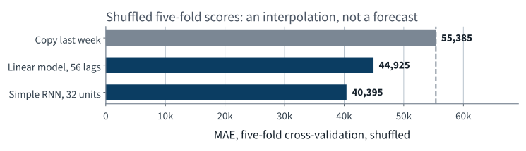
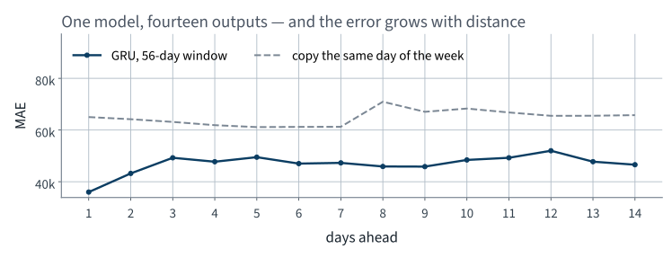
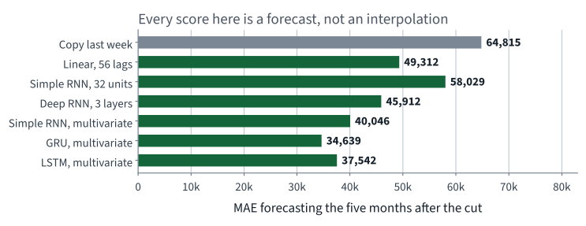

Chicago transit ridership
Lecture 16 Géron Ch. 13
Applications of Machine Learning
BSc Mathematics of Artificial Intelligence · Third year
Lecture 15 set the ground rules on this same series, and a number to beat:
No new derivation today. Lecture 11’s variance argument is the one that applies, unrolled through time instead of down layers — which is exactly why the gates exist. examinable the architectures, and what each gate is for.
one step of a recurrent layer
The state is the only route by which anything before step $t$ reaches step $t$. Its width is therefore a budget: whatever the network needs to remember has to fit in $\mathbf{h}$.
| Shape | Input | Output | Example |
|---|---|---|---|
| sequence to vector | a sequence | one value | today’s model |
| vector to sequence | one value | a sequence | a caption from an image |
| sequence to sequence | a sequence | a sequence | a forecast at every step |
| encoder–decoder | a sequence | a sequence | translation |
We build the first and the third today. The fourth is Lecture 18.
Unroll the network over the window and it becomes a deep feed-forward network whose layers share their weights. Then differentiate it exactly as Lecture 10 taught — nothing new is needed.
Initialisation cannot fix this the way it did in Lecture 11, because there the layers were independent. Something has to change in the cell itself.
Animation
import torch.nn as nn
class SimpleRnn(nn.Module):
def __init__(self, input_size=1, hidden_size=32, output_size=1):
super().__init__()
self.rnn = nn.RNN(input_size, hidden_size, batch_first=True)
self.head = nn.Linear(hidden_size, output_size)
def forward(self, X): # X: [batch, time, series]
outputs, last_state = self.rnn(X)
return self.head(outputs[:, -1]) # only the final step
batch_first=True because our batches are
[batch, time, series]. Without it the module silently reads the first
dimension as time.
model = SimpleRnn()
loss_fn = nn.HuberLoss(delta=0.05)
opt = torch.optim.SGD(model.parameters(), lr=0.05, momentum=0.9)
loader = DataLoader(train_set, batch_size=32, shuffle=True)
for epoch in range(200):
model.train()
for Xb, yb in loader:
opt.zero_grad()
loss_fn(model(Xb), yb).backward()
opt.step()
The same five lines as Lecture 10, unchanged.
zero_grad is still not optional and still fails silently.
Quadratic near zero, linear far away. We are optimising a proxy for MAE, and minimising the absolute error directly gives a gradient that never gets smaller as you approach the optimum.
The metric and the training loss are allowed to differ: the metric is what the operator reads, the loss is what the optimiser can descend. Here is the case.
40,395
Five folds, shuffled, seed 42 — identical protocol to the linear model.
Against 55,385 for copying last week on the same folds and 44,925 for the linear model (Lecture 15’s, averaged over twenty shuffles of five folds). That is 27.1% better than the baseline, and 10% better than the linear model.
Measured on one run of this lecture’s notebook; hardware, library versions and random seeds can make a re-run differ slightly.

Two models, both comfortably past the baseline, under the same shuffled protocol.
These folds are shuffled, so none of these numbers is a forecast. Every forward number in this lecture is scored on the same 151 days.
Measured on one run of this lecture’s notebook; hardware, library versions and random seeds can make a re-run differ slightly.
Squared error punishes a large miss quadratically, which on a series with occasional shocks means a handful of days dominate the gradient.
| Loss | Behaviour |
|---|---|
| MSE | smooth everywhere; dominated by outliers |
| MAE | robust; gradient is constant, so it converges slowly near the optimum |
| Huber | quadratic near zero, linear beyond — both properties, one knob |
The choice is the same argument as choosing the metric in Lecture 15, and it has the same answer: it depends on what an error costs the operator, and that is a question for them and not for us.
Consecutive training windows share almost all their content: a 56-day window starting on day $t$ and one starting on day $t+1$ differ in two values out of fifty-six.
A model evaluated in differenced units can look excellent and mean nothing: predicting a change of zero every day is nearly right, and it is the naive forecast wearing a disguise.
| Strategy | How | Weakness |
|---|---|---|
| Recursive | predict one step, feed it back, repeat | errors compound; the model never trained on its own output |
| Direct | a separate model per horizon | $k$ models, and none of them shares what the others learned |
| Sequence-to-sequence | one model, $k$ outputs at once | more to fit, and the outputs are not independent |
All three are defensible and all three must be evaluated the same way: forward in time, at the horizon you actually need. A model that is excellent one step ahead and useless seven steps ahead is not a good model if the operator plans a week in advance.
Training a sequence-to-sequence model, you can feed the decoder the true previous token or its own previous prediction.
| Trains | At prediction time | |
|---|---|---|
| True token (teacher forcing) | fast and stable | the model has never seen its own mistakes |
| Own prediction | slow, and early training is noise | matches deployment |
self.rnn = nn.RNN(input_size, hidden_size, num_layers=3,
batch_first=True)
One argument. Three recurrent layers stacked, the output of each feeding the next.
| Model | Forecast MAE | Train MAE | Recipe |
|---|---|---|---|
| Simple RNN, one layer | 58,029 | 37,388 | adam |
| Deep RNN, three layers | 45,912 | 31,359 | adam |
On this run, depth won — on test and on train. Do not write that down yet.
Measured on one run of this lecture’s notebook; hardware, library versions and random seeds can make a re-run differ slightly.
Each recipe is scored on July–December 2018, inside the training period, and the lower score wins. For the simple RNN:
| sgd | adam | Chosen | Simple RNN | Deep RNN | |
|---|---|---|---|---|---|
| This run | 41,878 | 40,910 | adam | 58,029 | 45,912 |
| The deck’s original run | 41,878 | 42,879 | sgd | 49,073 | 53,491 |
A ranking that rests on one near-tied selection decision is not a finding. Report it as unresolved, and settle it only with several seeds and a gap larger than their spread.
Measured on one run of this lecture’s notebook; hardware, library versions and random seeds can make a re-run differ slightly.
We have been forecasting rail from rail alone, while a bus series sits unused beside it — and a day-type column we established is known in advance.
mulvar = df[["rail", "bus"]] / 1e6
mulvar["next_day_type"] = df["day_type"].shift(-1) # known in advance
mulvar = pd.get_dummies(mulvar, dtype=float) # 5 columns
assert list(mulvar.columns) == ["rail", "bus", "next_day_type_A",
"next_day_type_U", "next_day_type_W"]
The architecture changes by one number: input_size=5.
shift(-1)The previous lecture measured a random split that let a model train on the rows surrounding what it was scored on. This one reads the future deliberately.
This is the one question about leakage that no static check can answer for you. It is not a property of the code; it is a property of the world.
| Model | Forecast MAE | vs copying last week |
|---|---|---|
| Copy last week | 64,815 | — |
| Simple RNN, rail only | 58,029 | 10% better |
| Simple RNN, five inputs | 40,046 | 38% better |
Thirty-one per cent off this run’s rail-only error for one line of feature engineering and one changed constructor argument.
Against the original run’s rail-only row it was eighteen per cent — the rail-only row is the unstable one. The five-input row reproduced to the rider, and it beats both.
Most of it is the day type. The network no longer has to infer that a holiday is coming from the shape of the previous eight weeks — which is impossible — because we told it.
Measured on one run of this lecture’s notebook; hardware, library versions and random seeds can make a re-run differ slightly.
The operations team also wants a fortnight. Two ways:
Feed the forecast back
Predict day $t{+}1$, append it to the window as though it had happened, predict $t{+}2$. Errors accumulate.
Predict all fourteen at once
Change the output layer to fourteen units and the target to a vector. One model, no accumulation.
target = self.series[end : end + 14, 0] # 14 values, not 1
model = GruModel(input_size=5, hidden_size=32, output_size=14)
At step 0 the model outputs the forecasts for steps 1 to 14; at step 1, for steps 2 to 15; and so on. The target is a sequence of windows rather than a single vector.
def forward(self, X):
outputs, _state = self.rnn(X)
return self.head(outputs) # every step, not outputs[:, -1]
After training, only the last step’s output is used.

The error grows with distance, from 35,997 at one day to 46,586 at fourteen — and stays below the no-model baseline throughout.
Measured on one run of this lecture’s notebook; hardware, library versions and random seeds can make a re-run differ slightly.
A plain cell multiplies the state at every step:
so over $T$ steps the gradient carries $T$ copies of the same matrix, and Lecture 11’s argument applies with the extra force that it is one matrix rather than many independent ones.
| Gate | Equation | What it decides |
|---|---|---|
| forget $\mathbf{f}_t$ | $\sigma(\cdot)$ | how much of the old cell state to keep |
| input $\mathbf{i}_t$ | $\sigma(\cdot)$ | how much of the candidate to write |
| candidate $\tilde{\mathbf{c}}_t$ | $\tanh(\cdot)$ | what to write, if anything |
| output $\mathbf{o}_t$ | $\sigma(\cdot)$ | how much of the cell state to expose as $\mathbf{h}_t$ |
Every gate is a sigmoid of the same two inputs $(\mathbf{x}_t, \mathbf{h}_{t-1})$ with its own weights, so a sigmoid in $[0,1]$ is a soft switch and the network learns when to open it. Four gates means roughly four times the parameters of a plain cell.
examinable State what each gate does and why the cell-state update is additive.
AnimationStill additive, still a near-identity path when $\mathbf{z}_t$ is small — the property that mattered, kept, with about three quarters of the parameters.
| Model, all five inputs | Forecast MAE | Training MAE |
|---|---|---|
| Simple RNN | 40,046 | 27,035 |
| LSTM | 37,542 | 24,540 |
| GRU | 34,639 | 20,356 |
The GRU wins on the forecast, and the second column says why to be careful: it fits the training rows 25% better than the plain cell but the forecast only 14% better. That gap is overfitting, and it is what to attack next, before reaching for a bigger cell.
Both cells are Chapter 13. Neither is a large model: a few thousand parameters.
Measured on one run of this lecture’s notebook; hardware, library versions and random seeds can make a re-run differ slightly.

From 64,815 to 34,639 — 47% better than doing nothing, and every bar is a forecast on the same days.
Measured on one run of this lecture’s notebook; hardware, library versions and random seeds can make a re-run differ slightly.
| Forecast | What we reported | What it does |
|---|---|---|
| Copy last week | 55,385 | 64,815 |
| Linear, 56 lags | 44,925 | 49,312 |
| Simple RNN | 40,395 | 58,029 |
| GRU, five inputs | — | 34,639 |
The two middle rows are the same models measured twice; the simple RNN’s right-hand number is the one that moves between runs. The linear row’s left number is Lecture 15’s scikit-learn fit; its right number is this notebook’s, on the same 151 days as every other right-hand number. The bottom row is the model we would actually deploy, and it was never measured the wrong way.
The final number is better than the one first reported — but we reached it by first admitting that the reported one was fiction.
Measured on one run of this lecture’s notebook; hardware, library versions and random seeds can make a re-run differ slightly.
It is 47% better than the system a transit authority could run with no data scientist at all, and its typical miss is around 10.4% of the day it is forecasting — against 16.5% for copying last week on those same 151 days. A naive percentage measured over any other set of days is not the comparison to make here. (As a share of a mean day on those same 151 days — 583,030 riders — the miss is 5.9%, which is a third quantity again.)
Note what that sentence contains: the protocol, the baseline, the rows, and where the gain comes from. Four things the number alone does not carry.
Measured on one run of this lecture’s notebook; hardware, library versions and random seeds can make a re-run differ slightly.
Fit on everything to the end of 2019. Forecast the four months from March 2020, which nobody in this room needs reminding about.
| MAE | |
|---|---|
| The linear model, trained to the end of 2019 | 84,380 |
| Copying last week, on the same 122 days | 36,282 |
| The actual mean level over that period | 141,404 |
The model is 2.3 times worse than doing nothing, and its error is six tenths of the entire level.
Measured on one run of this lecture’s notebook; hardware, library versions and random seeds can make a re-run differ slightly.
March 2020 is not a leak and it is not the model’s fault. No forecaster could have produced it from eight weeks of history, and copying last week wins only because it adapts within a week of the collapse.
Which is why a deployed forecaster is monitored against its own naive baseline, continuously. If the margin disappears, something has changed in the world.
Six questions. The third is the oldest leak in the course — a statistic fitted before the split — and the fourth is the one only a series of overlapping windows has.
| Question | Why it decides whether the number means anything |
|---|---|
| At what horizon? | one step ahead is a different problem from seven |
| Against which baseline? | seasonal-naive, not the mean — Lecture 15 |
| On which protocol? | rolling origin, and how many folds |
| With what spread? | one origin is one sample |
| In which units? | differenced or not; scaled or not |
A recurrent network that beats the naive forecast by less than the fold-to-fold spread has not beaten it — and, as the depth comparison showed, a ranking that flips between runs was never a ranking.
Steps 2 and 3 come before step 4 for one reason: after you have a number, you will not choose the protocol that makes it look worse.
shift(-1)Measured on one run of this lecture’s notebook; hardware, library versions and random seeds can make a re-run differ slightly.
Not presented — for afterwards
five, in the style of the written paper
Solutions on Lecture 17’s deck.
day_type.shift(-1) as a feature and objects that it reads the future. State whether it is a leak, and the one question that settles it. [5]Solutions on Lecture 17’s deck.
The five set at the end of Lecture 15
not part of this lecture
1. For a stationary series, $\operatorname{Var}(X_t - X_{t-h}) = 2\gamma(0)(1-\rho(h))$. State the condition on…
$\rho(h) < 1/2$.
2. Explain why the forecast “copy the value from seven days ago” is hard to beat on daily ridership,…
Its error is the seasonal difference $-(\nabla_7 y)_t$, with variance $2\sigma^2(1-\rho_7)$; with $\rho_7 = 0.831$ that is only $0.34\,\sigma^2$.
Measured on one run of this lecture’s notebook; hardware, library versions and random seeds can make a re-run differ slightly.
3. State why MAPE is the wrong metric for transit ridership, using a specific day as the example.
It divides by the truth, and a holiday’s ridership is a fraction of a working day’s: over the three non-working days at the end of May 2019 ridership falls to about weekend level, roughly half, so the same absolute miss counts about twice as much there.
4. A cross-validated forecast uses KFold(shuffle=True) and reports a good score. Name the two conditions the…
Independence: the held-out rows must be independent of the training rows. Deployment: they must come from the distribution the model will meet, where every training day precedes every forecast day.
5. A dataset class turns a pool of 1,247 daily values into windows of 56 days, each labelled with the day that…
$1{,}247 - 56 = 1{,}191$ rows. One index earlier, the label is the last day of its own window: the model is handed the answer as an input, and the score measures a leak, not a forecast.
end = idx + window_length is both the end of the window and the position of the label; nothing else complains if it is off by oneMeasured on one run of this lecture’s notebook; hardware, library versions and random seeds can make a re-run differ slightly.
Lecture 17 · Géron Ch. 14
Reviews as data, and two bag-of-words baselines to beat
Softmax and cross-entropy, and why their gradient is $\mathbf{p} - \mathbf{y}$
Subword tokens, embeddings and a recurrent classifier — then the same
model with pretrained embeddings swapped in
Run the Lecture 16 notebook first